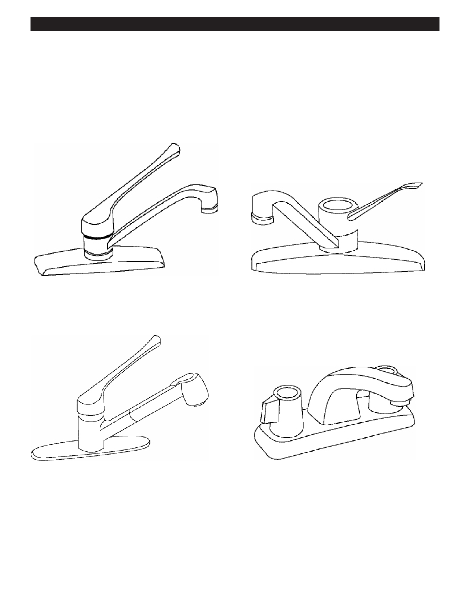

PA RT I C I PA N T R E S O U R C E G U I D E
Faucets and Sinks
Faucets and sinks are the source of many plumbing problems in apartments. There are
many different types of faucets, but they have several things in common: hot and cold
water pipes, a handle, a spout, and an aerator. Aerators add air to the water as it comes
out of a faucet to deliver a strong spray and less splash.
Ball faucets: Ball faucets have one handle set in a rounded
Cartridge faucets: Cartridge faucets may have one or two
top. They are washerless.
handles. They are washerless.
Disc faucets: Disc faucets have one handle. They are
Compression faucets: Compression faucets have two
washerless.
handles. They use washers and are common in older
apartment buildings.
22